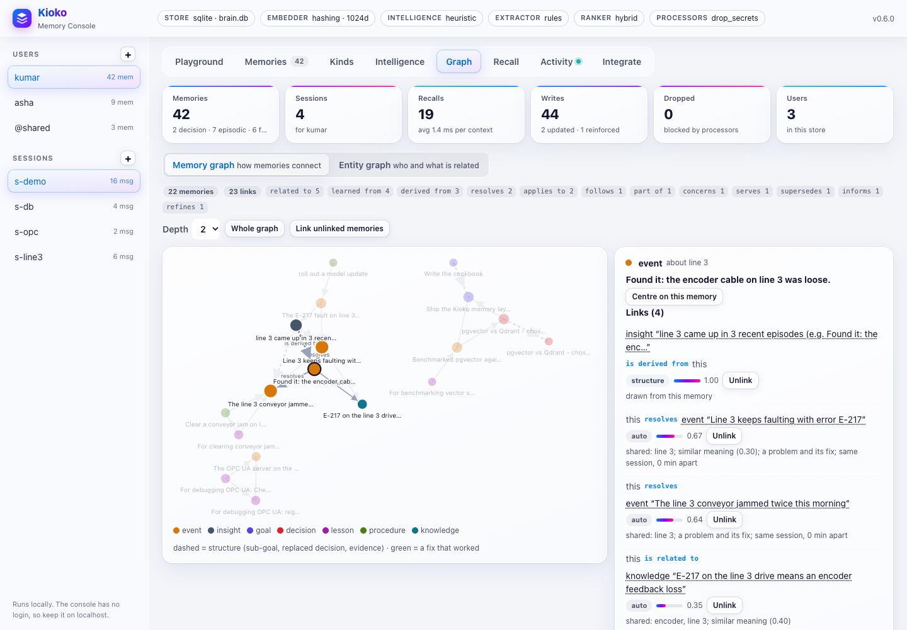

Graph memory: how Kioko connects memories¶
Kioko's graph memory has two layers:
| Layer | What it holds | Example | Where |
|---|---|---|---|
| Entity graph | Who and what is related to what: triples with temporal validity | (Kumar) -reports_to-> (Krutika), (Kioko) -uses-> (pgvector) |
memory.graph.add(), relations(), neighbors(), path() (memory types) |
| Memory links | Which memories belong together, and how | decision "use pgvector" serves goal "Ship Kioko by Dec 15"; event "found a loose encoder cable" resolves event "line 3 faults with E-217" | memory.graph.link(), links(), related(), trace(), explain(), connect(), memories() |
This document is about the second layer: the algorithm that links every new memory to the memories it is related to, and the way recall reads those links back. The entity graph feeds into it as one source of evidence ("Kioko uses pgvector" connects a decision about pgvector to a goal about Kioko).
Why bother? Similarity search finds memories that look like the question. Many useful memories don't: the decision that a goal depends on, the fix that solved last month's incident, the lesson learned from a failure. Links capture those relationships when the memory is written, while the context is fresh, and recall can then follow them.
Contents:
- Quick start
- What a link is
- The linking algorithm (write path)
- Worked examples
- Structure, updates and deletes
- Reading the graph: spreading activation
- Learning over time: feedback, decay, review
- Cost and complexity
- Isolation and privacy
- Configuration
- API on every surface
- Limits and tuning
- Research basis
1. Quick start¶
Linking is on whenever the knowledge graph or the intelligence is on, so kioko.intelligent() has it - and so do
kioko serve --intelligence and kioko ui --intelligence for the REST/MCP service and the console. A plain
MemoryLayer() or kioko serve without it stores memories without linking them; connect() (or kioko connect)
links them later.
import kioko
memory = kioko.intelligent() # or MemoryLayer(auto_link=True)
U = "kumar"
memory.goals.add("Ship the Kioko memory layer by December 15", user_id=U)
memory.graph.add("Kioko", "uses", "pgvector", user_id=U) # entity graph
memory.manage("We decided to use pgvector because we already run Postgres.", user_id=U)
# linked: decision "use pgvector because we already run Postgres" serves goal "Ship the Kioko memory layer..."
memory.add("Line 3 keeps faulting with error E-217.", user_id=U, memory_type="episodic", session_id="s1")
memory.add("Found it: the encoder cable on line 3 was loose.", user_id=U, memory_type="episodic", session_id="s1")
# linked: event "Found it: the encoder cable on line 3 was loose" resolves event "Line 3 keeps faulting..."
for link in memory.graph.links(goal_id): # every link, with its evidence
print(link.line(), "|", link.why, link.weight, link.by)
memory.graph.related(memory_id) # what is connected, best first, with the path
memory.graph.explain(a, b) # why two memories are (or are not) linked
ctx = memory.recall("line 3 is faulting with E-217 again", user_id=U)
print(ctx.text) # ... and a "How these memories connect:" section
recall() follows the links: a question that retrieves one memory also brings the memories most strongly connected
to it, and the memory block tells the agent how they connect:
Relevant memories:
- Line 3 keeps faulting with error E-217.
- Found it: the encoder cable on line 3 was loose.
- The line 3 conveyor jammed twice this morning.
Procedures that may apply:
- Clear a conveyor jam on line 3: 1) Press stop; 2) Open the guard; 3) Remove the jammed bottle; 4) Reset the drive
Lessons from earlier attempts:
- For clearing conveyor jams: reset the drive before reopening the guard (1/1 worked). Lesson: always check the photo-eye alignment after a jam
How these memories connect:
- lesson "For clearing conveyor jams: reset the drive before reopenin…" refines procedure "Clear a conveyor jam on line 3"
- event "Found it: the encoder cable on line 3 was loose" resolves event "Line 3 keeps faulting with error E-217"
- event "Found it: the encoder cable on line 3 was loose" resolves event "The line 3 conveyor jammed twice this morning"
- procedure "Clear a conveyor jam on line 3" applies to event "The line 3 conveyor jammed twice this morning"
- event "Line 3 keeps faulting with error E-217" follows event "The line 3 conveyor jammed twice this morning"
(The output above is real, from the memories tests/test_memory_graph.py seeds; the lesson was not retrieved by
the question's words, it was brought in by its link to the procedure.)
Memories written before linking was on are linked with memory.graph.connect(user_id=...), kioko connect, or the
console's Link unlinked memories button. The maintenance pass (memory.maintain()) does it as well.
2. What a link is¶
A link is a typed, weighted connection between two memories, read as a sentence: source <type> target.
MemoryLink(source="d1", target="g1", type="serves", weight=0.6, why="via Kioko uses pgvector", by="auto",
source_label="use pgvector because we already run Postgres", source_type="decision",
target_label="Ship the Kioko memory layer by December 15", target_type="goal")
# line(): decision "use pgvector because we already run Postgres" serves goal "Ship the Kioko memory layer by December 15"
Link types¶
| Type | Reads as | Typical pair (source -> target) | Made by |
|---|---|---|---|
serves |
serves | decision / procedure / skill -> goal | algorithm |
advances |
advances | event with progress or a fix -> goal ("finished the analysis") | algorithm |
concerns |
concerns | other event -> goal (a fault on the line the goal is about) | algorithm |
informs |
informs | knowledge / fact / preference / insight / event -> decision, procedure, skill, lesson | algorithm |
refines |
refines | lesson -> procedure / skill / decision | algorithm |
learned_from |
was learned from | lesson -> event | algorithm |
applies_to |
applies to | procedure / skill -> event | algorithm |
resolves |
resolves | fix -> problem (event with a fix cue -> event with a problem cue; a procedure that worked -> the incident) | algorithm, feedback |
follows |
follows | later event -> earlier event of the same session | algorithm |
part_of |
is part of | sub-goal -> goal | structure |
supersedes |
supersedes | new decision -> the decision it replaced | structure |
derived_from |
is derived from | insight / episode summary -> its evidence | structure |
related_to |
is related to | anything else, or when only the entity graph connects them | algorithm, manual |
Who made it¶
by |
Meaning | Fades? | Counts towards the degree cap? |
|---|---|---|---|
structure |
follows from the memory's own fields (a goal's parent, a decision's supersedes, an insight's evidence) |
no | no |
manual |
memory.graph.link(), POST /v1/memories/{id}/links, kioko link, the console |
no | no |
feedback |
a fix that worked (section 7) | yes | no |
llm |
confirmed or retyped by a model review | yes | yes |
auto |
the linking algorithm | yes | yes |
Between two memories there is at most one link. A weaker author never replaces a stronger one's link (the order
is the table's order); the same author's newer link replaces the older one. Asking for a link by hand where a
stronger one exists (a sub-goal is already part_of its goal) raises LinkConflict (REST: 409) instead of
pretending it was stored; asking again for a link that is already there just returns it.
Storage¶
Links live in each memory's metadata as an adjacency list, written on both memories:
"links": [
{"id": "9f2c…", "type": "resolves", "dir": "out", "w": 0.677, "by": "auto",
"why": "shared: line 3; similar meaning (0.30); a problem and its fix; same session, 0 min apart",
"at": 1793135275.85, "seen": 1793135275.85}
],
"entities": ["line 3"],
"linked_at": 1793135275.85
dir is out on the source and in on the target. entities caches what the memory is about and linked_at marks
that the linker has seen it. Because links are ordinary metadata, every store supports them (in-process, SQLite,
pgvector, Qdrant, the REST service), they travel with exports and backups, and reading a memory's links costs no
extra query. Entries that are not link dictionaries (say, your own "links": ["https://…"]) are left alone.
3. The linking algorithm (write path)¶
Every write that creates a memory (add, learn, manage, any kind's add/record/reflect) ends with
linker.on_write(memory, "added"). A content change re-derives the memory's automatic links; a metadata-only change
checks its structural links. Linking never breaks a write: an error is logged and the write stands.
new memory m
|
(1) ANCHOR | entities E(m), salient terms S(m), IDF weights
v
(2) CANDIDATES | inverted index (rare shared terms, bridged entities) + nearest neighbours
| + same session + structural targets (<= ~50 memories)
v
(3) EVIDENCE | share, sem, bridge, time, cue for each candidate c
v
(4) COMBINE | score = prior(kind m, kind c) * noisy-OR(evidence)
v
(5) GATE+SELECT | concrete evidence and score >= 0.35; best 5
v
(6) TYPE | pair of kinds + cue words -> serves / resolves / refines / ...
v
(7) STORE | both adjacency lists (one owner), degree cap 12, one transaction
Step 0: which memories take part¶
Linkable kinds: facts and preferences (not profile.* slots: they are in every context anyway), episodes,
knowledge, goals, procedures, skills, lessons (strategies), decisions and summaries (insights and episode
summaries; not a session's rolling summary). Instructions, working memory, graph triples, entities and the layer's
bookkeeping are not linked.
Step 1: anchor - what the memory is about¶
Entities E(m), each a lower-case key:
- identifiers: tickets and work orders (
INC-4521), error codes (E-217), part and model numbers (S7-1500), addresses (10.20.0.0/16); - assets with a number:
line 3,press 12,cell 4B,server 2...; - names: sequences of capitalised words (
Rockwell Automation,FactoryTalk Optix,OPC UA). The first word of a sentence counts only if it is distinctive (ALLCAPS, CamelCase, contains a digit); framing words (User,Decision,Goal,Lesson, month and day names ...) never count; after a framing prefix ("Goal: Ship ...") an action verb is dropped; - entities the user's entity graph already knows (
graph.match_entities), so lower-case names likepgvectorcount once the graph has them.
Salient terms S(m): the entity keys (as e:<key>) plus the memory's content words, stemmed, without stop
words, digits, the framing vocabulary of stored memories ("decided", "lesson", "prefers" ...) and light verbs
("keeps", "came", "went", "got" ...) (t:<stem>). "The fault came back" and "the theme came up" share nothing.
IDF weights. The linker keeps, per (user, agent) scope, the number of linkable memories n and each term's
document frequency df(t), incrementally:
idf(t) = ln(1 + (n + 20 - df(t) + 0.5) / (df(t) + 0.5)) (BM25's IDF, smoothed with 20 virtual memories)
idf(t) = 0 if n >= 20 and df(t) / n > 0.5 (a term in most memories connects nothing)
w(t) = idf(t) * 1.5 if t is an entity, else idf(t)
The 20 virtual memories (that contain none of the terms) keep a young store from treating every shared word as common: with two memories, plain IDF would give a shared word almost no weight; smoothed, the words weigh almost evenly until real statistics take over.
The same structure is an inverted index: postings(t) = the memories that contain t. It is built once per
scope from the store (cached for 10 minutes, updated on every write) and is what makes candidate search cheap.
Step 2: candidates - who could be linked¶
- Inverted index. The 12 terms of
S(m)with the highest IDF, plus the entities the graph relates toE(m)(step 3, bridge), vote for the memories in their postings, each vote weighted byw(t). A term with more thanmax(50, 0.2 n)postings nominates nothing. The 24 memories with the most votes become candidates; the shared knowledge base (@shared) adds up to 12. - Meaning. A vector database (pgvector, Qdrant) adds its 24 nearest neighbours. On a store without vector search, a semantic embedder adds the hybrid search's top 24 (a full scan); the offline embedder is lexical, so the inverted index has already found what it would.
- Same session. Up to 30 memories written in the same session.
- Structure. The memories the new memory's fields name (step 5).
Candidates of another user, of another agent of this user, or chunks of the same ingested document are discarded here.
Step 3: evidence - for each candidate c¶
| Signal | Definition | Range |
|---|---|---|
share |
weighted overlap of salient terms: W(S(m) ∩ S(c)) / min(W(S(m)), W(S(c))), W(X) = Σ w(t); halved (once) when every shared term is a hub (df >= max(4, 0.15 n)) or only names a place or machine ("line 3", "station 12") and its words: where something happened is weak common ground - two faults on line 3 may be unrelated - while what it is about ("Nike Pegasus", "E-217") is strong |
0..1 |
sem |
meaning, calibrated to the embedder: clamp((cos - h/2) / (h/2), 0, 1), h = the ranker's min_vector_only (0.3 by default; tune it for your embedder) |
0..1 |
bridge |
the entity graph relates an entity of one memory to an entity of the other that the first does not mention (Kioko -uses-> pgvector): 1.0, or 0.4 when either entity is a hub (df >= max(4, 0.15 n)); 0 when they already share the entity |
0, 0.4, 1 |
time |
same session, written within 2 hours: 1.0; same session: 0.5; else 0 | 0..1 |
cue |
a problem and its fix: the type rule says resolves (step 6), same session within 2 hours, and at least one shared term |
0, 1 |
The weighted overlap coefficient (rather than Jaccard) lets a short memory match a long one ("User likes green tea" vs a paragraph about tea), and IDF makes rare terms - an error code, a product name - count far more than common ones.
Step 4: combine¶
Each signal is independent evidence that the two memories belong together; they are combined with a noisy-OR and scaled by a prior for the pair of kinds:
raw = 1 - (1 - 0.8·share) · (1 - ω·sem) · (1 - 0.6·bridge) · (1 - 0.35·time) · (1 - 0.5·cue)
score = prior(kind(m), kind(c)) · raw ω = 0.5, or 0.25 with a lexical embedder
With the offline embedder, similarity is itself computed from words, so it repeats share and counts half.
Priors (symmetric; the kinds are the nouns used in link lines):
| Pair | Prior | Pair | Prior |
|---|---|---|---|
| decision - goal | 1.00 | event - event | 0.85 |
| lesson - procedure | 1.00 | event - decision | 0.85 |
| lesson - skill | 0.90 | knowledge - procedure | 0.85 |
| lesson - event | 0.90 | knowledge - decision | 0.85 |
| event - procedure | 0.90 | procedure - skill | 0.85 |
| event - insight | 0.90 | lesson - decision | 0.85 |
| procedure - goal | 0.85 | goal - goal | 0.80 |
| event - goal | 0.85 | decision - decision, decision - procedure | 0.80 |
| skill - goal, fact - goal, lesson - goal, insight - goal | 0.70 | facts, knowledge and the rest | 0.60 - 0.75 |
| anything with a preference | 0.50 | not listed | 0.60 |
Step 5: gate and select¶
A candidate is linked only with concrete evidence and a high enough score:
evidence = share >= 0.30
or cos >= h + (1 - h)/2 (very similar meaning: 0.65 at h = 0.3)
or bridge = 1 and the pair is means -> end (decision/procedure/skill/event -> goal)
or cue = 1
or share >= 0.15 and (sem >= 0.5 or time = 1 or bridge > 0)
linked = evidence and score >= threshold (threshold = 0.35)
Similarity alone never links two memories (unless very high): with the offline embedder, "ops prefers one
database" and "User prefers Python" score 0.25 cosine on the word prefers alone. A graph bridge alone links only a
means to its end; elsewhere it supports other evidence. The best max_new = 5 candidates by score are linked,
plus every structural target.
Step 6: type¶
The pair of kinds decides the type; cue words refine it:
| Pair | Type (direction) |
|---|---|
| decision - goal | decision serves goal |
| procedure / skill - goal | procedure serves goal |
| event - goal | event advances goal if it reports progress or a fix (finished, shipped, passed, 60 %, fixed ...) and no problem; otherwise concerns |
| knowledge / fact / preference / insight / lesson - goal | informs goal |
| lesson - procedure / skill / decision | lesson refines it |
| lesson - event | lesson learned_from event |
| procedure / skill - event | procedure applies_to event |
| event - decision | event informs decision |
| event - event | resolves when one has a fix cue (fixed, found it, root cause, was loose, replaced ...), the other a problem cue (fault, error, failed, jammed, keeps …ing ...) and the fix was recorded after the problem (a fault that comes back after a fix is not resolved by it); else follows (later -> earlier) within a session; else related_to |
| knowledge / fact / preference / insight - decision / procedure / skill / lesson | informs |
| anything else (including insight - event / fact) | related_to |
derived_from is never guessed from content: it is claimed only where the provenance is recorded (an insight's
evidence list, a summary's episodes), as a structural link.
When only the entity graph connects two memories (little shared text, no session), the link is typed
related_to - except a means serving its end, which keeps serves / advances / concerns. The type says no more
than the evidence supports.
Step 7: store¶
The link is added to both memories' adjacency lists in one transaction (update_many on SQLite), with its
evidence in why and the score as weight. A memory keeps at most max_degree = 12 automatic links (auto, llm):
when a new link would exceed that, the weakest (faded weight, section 7) gives way on both sides. One event,
memory.linked, reports the new links (the console's Activity and Playground show it; a ManageReport lists it as
linked: ...).
4. Worked examples¶
All numbers below are what the algorithm computes for the memories of section 1 (9 linkable memories, offline
embedder, h = 0.3). memory.graph.explain(a, b) prints the same.
A fix and its problem. "Found it: the encoder cable on line 3 was loose." vs "Line 3 keeps faulting with error E-217." (same session):
salient weights fix: e:line 3 2.85, found 3.0, encoder 3.0, cable 3.0, line 1.9, loose 3.0 W = 16.75
fault: e:e-217 4.49, e:line 3 2.85, line 1.9, fault 3.0, error 3.0 W = 15.24
share = (2.85 + 1.9) / min(16.75, 15.24) = 0.312, halved: line 3 is in 4 of the 9 memories (a hub) -> 0.156
sem = clamp((0.301 - 0.15) / 0.15) = 1.0 time = 1 (same session, 0 min apart) cue = 1
raw = 1 - (1 - 0.8·0.156)(1 - 0.25·1)(1 - 0)(1 - 0.35·1)(1 - 0.5·1) = 0.787
score = prior(event, event) 0.85 · 0.787 = 0.669 -> linked: event "Found it …" resolves event "Line 3 keeps …"
why = "shared: line 3; similar meaning (0.30); a problem and its fix; same session, 0 min apart"
The shared words alone would not have been enough (share 0.156 < 0.3); a problem and its fix in the same session, the fix recorded after the problem, are.
A means and its end, through the entity graph. "Decision: Vector database - chose pgvector because we already
run Postgres." vs "Goal: Ship the Kioko memory layer by December 15.": no shared word (cosine 0.04), but the decision
mentions pgvector, the goal mentions Kioko, and the entity graph holds Kioko -uses-> pgvector:
bridge = 1.0 (neither entity is a hub) raw = 1 - (1 - 0.6) = 0.6 score = prior(decision, goal) 1.0 · 0.6 = 0.60
-> linked: decision "use pgvector …" serves goal "Ship the Kioko memory layer …" why = "via Kioko uses pgvector"
A lesson and a procedure. share 0.487 (drive, clearing, reset), cosine 0.47: raw = 1 - (1 - 0.39)(1 - 0.25) =
0.542, prior 1.0 -> 0.542: lesson refines procedure.
Not linked. "User likes green tea." vs "The plant's PLC network uses the 10.20.0.0/16 subnet.": nothing shared, cosine 0.03 -> raw 0, no link.
A hub does not bridge everything. With Line 3 -has-> conveyor in the entity graph and "line 3" mentioned by
many memories, a telemetry note about line 3 and a lesson about conveyor jams are not linked: the bridge through
the hub counts 0.4, and a bridge alone links only a means to its end.
On a mixed set of 35 memories (a work project, plant operations, running, tea), the algorithm made 19 links, all of which a reader would accept (the weakest: "User drinks coffee before long runs" informs the decision about running shoes, 0.39). Before the hub, lexical-embedder and type rules above were added, the same set produced 38 links, about a third of them spurious.
5. Structure, updates and deletes¶
Structural links follow from a memory's own fields and never fade:
- a goal with
parent->part_ofthe parent goal; - a decision with
supersedes->supersedesthe old decision. The new decision answers the same question, so it takes over the old decision's other links (the goal it served, the benchmark that informed it), at 90 % of their weight and withwhy= "taken over from the decision it replaced (...)". Links the algorithm made move: the old decision keeps only itssupersedeslink to its replacement (plus any link a person or feedback made, which the new decision also gets), so a goal's neighbourhood holds the current decision, not two competing ones - also when the new decision had already found the goal by itself (then the old link just goes). A taken-over link is marked withfrom= the replaced decision. From then on the replaced decision is history: it is never a candidate for another memory's automatic links, and whatever the algorithm finds for it later (aconnect()backfill of memories written before linking was on, a rebuild) is linked to the decision that replaced it - the newest one in the chain - markedfrom, never to the replaced one; The old decision is history one hop further away -traceand the console still reach it - and recall leaves superseded decisions out; - an insight with
evidence(reflection) or an episode summary withepisodes(consolidation) ->derived_fromeach of them.
Updates. New content (update(content=...), a same-key update, a contradiction that supersedes a fact) drops the
memory's automatic links and derives them again from the new text: its mentions are extracted again and its
entries in the term statistics are replaced (a memory that no longer mentions DB-17 is no longer found through it).
Links a decision took over from the decision it replaced are kept: they cannot be derived again, so neither an edit
nor connect(rebuild=True) removes them (only deleting a memory does). A metadata-only change checks the
structural links; the takeover happens once per replacement, so a link someone removed stays removed.
Deletes. The deleted memory's neighbours forget their links to it. Links that point at memories removed behind
the layer's back (another process, a raw store call) are skipped when read and removed by prune().
Merges. When consolidation merges a near-duplicate into an older memory, the duplicate's links move to the survivor before it is deleted.
6. Reading the graph: spreading activation¶
recall() retrieves memories as usual (hybrid dense + BM25 + entity graph + recency, fused with RRF, planned by
intent). Then it spreads activation from what it retrieved to the memories linked to it - a personalized
PageRank over the linked neighbourhood:
seeds s(v) ∝ retrieval score of each retrieved memory (and of each open goal the question is about)
neighbourhood: breadth first from the seeds, 2 hops, the 8 strongest links per memory, at most 40 memories,
links whose faded weight is below 0.1 are not followed; superseded decisions pass on 30 %
edge weight a(u, v) = faded weight of the link (section 7), symmetric
transition P(u -> v) = a(u, v) / Σ_x a(u, x)
iterate p ← α · s + (1 - α) · Pᵀ p α = 0.5 (restart), 20 iterations
a memory without links sends its mass back to the seeds
select the non-seed memories with the most activation that the context may show
(same filters as retrieval: not superseded, not consolidated into the model, in scope -
the user's own memories, and shared knowledge only when include_shared is on)
The best links of them (default 3, or the plan's number) join the section of their kind (procedures, decisions,
...) with signals["linked"] = activation relative to the strongest seed. They count as shown, not used: their
access count does not grow, so association never heats a memory up on its own (the same rule as for pinned
memories).
Open goals are always in the context. They seed the expansion when the question names them (shares a word) or is about goals ("how are my goals going?"), so a goal's decisions and procedures come along.
The links section. Whatever links is, the context's links section lists the links among the memories it
contains that touch a memory the question retrieved or the links brought in - first the links that brought a
memory in, then relations before provenance (derived_from says where a summary came from, not why a memory
matters), then structural, feedback and manual links, then by weight; at most 6 lines, and no memory takes more than
two of them while other links are waiting. Links among memories that are
always there (open goals, profile, pins) are left out unless the question is about them: for "why does line 3 keep
faulting?" a goal and its sub-goal explain nothing, for "how are my goals going?" they do. Under a token budget the
section is filled after decisions; a line whose memories were left out is dropped.
How many linked memories a question gets is part of the recall plan:
| Intent | links |
Intent | links |
|---|---|---|---|
| relational ("who is Krutika?") | 6 | temporal | 2 |
| decision ("why did we pick X?") | 4 | knowledge | 2 |
| goals | 4 | skills | 2 |
| how-to | 3 | personal | 1 |
| strategy | 3 | small talk, feedback | 0 (no expansion, no links section) |
| general (no intent) | 3 |
Other reads: related(memory_id, depth=2) runs the same activation from one memory and returns each related memory
with the chain of links that reaches it; trace(a, b) is the shortest chain between two memories (breadth first);
explain(a, b) scores a pair from scratch.
7. Learning over time: feedback, decay, review¶
Feedback makes the strongest links. With an intelligence, when the user says a suggestion worked ("that worked,
thanks"), the procedure, skill or lesson that was credited is linked to the problems of the session it solved:
episodes and facts of the same session from the last 6 hours with a problem cue, plus problem episodes the agent
was shown. The link is fix resolves problem, weight 0.8, by = feedback. Next time the problem comes up, recall
brings the fix and says why.
Hebbian reinforcement. On the same success, the links among the memories the agent was given are strengthened - "memories that are used together, link together":
Decay. Automatic, model-reviewed and feedback links fade unless they are used:
prune() removes links whose faded weight is below 0.1 and links to memories that no longer exist. The degree cap
always lets the weakest automatic link go first.
Model review (optional). With Intelligence(llm=...), the maintenance task shows the model the 12 most recent
automatic links in one call:
p1: A = [decision] 'Decision: Vector database - chose pgvector because we already run Postgres.'
B = [goal] 'Goal: Ship the Kioko memory layer by December 15.'
proposed: A serves B (via Kioko uses pgvector)
...
Answer with JSON only: {"links": [{"pair": "p1", "keep": true, "type": "serves", "source": "A", "why": "..."}]}
It keeps, retypes or drops each link; kept links become by = llm with weight at least 0.7. Invalid pairs, types
and malformed answers are ignored, and a failing model never breaks maintenance. One call reviews up to 12 links,
so the cost stays small; links are made by the algorithm at write time either way.
When maintenance runs. Every link_every turns (25 by default) the scheduler links memories that were never
linked (up to 200 per run), prunes, and - with a model - reviews. memory.maintain(tasks=["link"]),
kioko maintain --tasks link and POST /v1/maintain {"tasks": ["link"]} run it now.
8. Cost and complexity¶
Per write, with T salient terms (typically 5-15) and at most C ≈ 50 candidates:
| Step | Cost |
|---|---|
| anchor | O(text) + graph entity matching |
| candidates | O(12 · postings) votes, ≤ 36 store reads; a vector database adds one k-NN query |
| evidence | O(C · T) plus C cosines |
| store | 1 + (links made) records written in one transaction |
Per recall with links > 0: at most 40 memory reads around the seeds and 20 PageRank iterations over at most 40
nodes; nothing at all when the retrieved memories have no links.
Measured with python examples/benchmarks/memory_graph_bench.py (SQLite, offline embedder, synthetic notes on 20
topics, so most notes have related notes - the dense, expensive case; median of 40 writes and 30 recalls):
| memories | write, linking off | write, linking on | recall, links=0 | recall, links=3 | connect() | links per memory (mean / max) |
|---|---|---|---|---|---|---|
| 500 | 5 ms | 21 ms | 183 ms | 181 ms | 2479 links in 11 s (22 ms each) | 6.4 / 12 |
| 2000 | 6 ms | 20 ms | 710 ms | 707 ms | 10000 links in 66 s (33 ms each) | 6.5 / 12 |
The write cost does not grow with the store: candidates come from the inverted index, not from a scan. About half of it is SQLite committing (your disk's fsync speed matters). Following links added no measurable time to a recall in these runs (the difference is within run-to-run noise): the expansion reads at most 40 memories. Recall itself grows with the store on SQLite because it scores every memory in scope; on pgvector or Qdrant the database does the nearest-neighbour search, so recall and linking should stay bounded there (not measured: these numbers are from SQLite only).
9. Isolation and privacy¶
- A link only ever connects memories of one user; for an agent-scoped memory, of the same agent.
- Links to the shared knowledge base (
@shared) are stored only on the user's memory: nothing about a user is written into shared data, and another user's recall can never follow such a link back. - Profile slots are not linked; secrets never become memories in the first place (
DropSecrets). - Deleting a memory removes it from its neighbours' lists;
forgetrequests delete memories the same way.
10. Configuration¶
MemoryLayer(auto_link=True, # default: on with auto_graph or an intelligence
linker={"threshold": 0.35, "max_new": 5, "max_degree": 12})
MemoryLinker(memory, threshold=0.35, # minimum score for an automatic link
max_new=5, # links per new memory
max_degree=12, # automatic links per memory
candidates=24, # candidates from the inverted index / vector search
half_life_days=180, # fading of automatic and feedback links
min_weight=0.1, # below this a link is pruned and not followed
restart=0.5, iterations=20, fanout=8, max_nodes=40) # spreading activation
Intelligence(link_every=25, # maintenance: link, prune, review
link_review=12, # links the model reviews per run (with llm=)
...)
memory.recall(q, links=0) # no expansion for one call; the plan decides otherwise
memory.context(q, links=3) # context() expands only when asked (default 0)
kioko.intelligence.planner.LINKS_PER_INTENT holds the per-intent numbers of section 6. HybridRanker(
min_vector_only=...) sets h, the similarity scale of step 3: with OpenAI or Azure OpenAI embeddings, a value
around 0.45 matches their cosine range better than the default 0.3.
11. API on every surface¶
Python (memory.graph, also on memory.scoped(...) and RemoteMemory):
| Call | Returns |
|---|---|
link(a, b, type="related_to", weight=1.0, why="") |
MemoryLink (manual, never fades) |
unlink(a, b) |
True if they were linked |
links(memory_id) |
[MemoryLink], strongest first |
related(memory_id, depth=2, limit=10) |
[RelatedMemory(record, score, path)] |
trace(a, b, max_depth=4) |
[MemoryLink] from a to b |
explain(a, b) |
LinkScore(score, linked, type, why, signals) |
connect(user_id=..., rebuild=False, limit=None) |
{"memories", "links", "dropped", "duration_ms"} |
memories(user_id=..., center=None, depth=2, limit=120) |
{"nodes", "edges", "stats"} for drawing |
REST (/v1, documented in /v1/openapi.json under the graph tag):
GET /v1/memories/{id}/links the links of a memory
POST /v1/memories/{id}/links {"target", "type", "why", "weight"} link by hand (409: a stronger link exists)
DELETE /v1/memories/{id}/links/{target} unlink
GET /v1/memories/{id}/links/{target}/explain the evidence between two memories
GET /v1/memories/{id}/related?depth=2&limit=10 spreading activation from one memory
GET /v1/graph/memories?user_id=¢er=&depth= nodes and edges
POST /v1/graph/connect {"user_id", "rebuild", "limit"} link what was never linked
POST /v1/recall {"query", "user_id", "links": 3} (the plan sets links when omitted)
CLI
kioko related <memory-id> [--depth 2] [--json] # links and what is connected, with the path
kioko link <a> <b> --type resolves --why "..." # by hand; --remove to unlink
kioko connect --user kumar [--rebuild] # link memories written before linking was on
kioko maintain --tasks link # link, prune and (with a model) review
MCP: the explore_memories tool finds the memory that best matches a query and lists what is linked to it, with
the evidence; get_memory_context already includes linked memories and the links section.
Console: the Graph tab's Memory graph view draws memories as nodes (coloured by kind) and links as edges
(dashed: structure; green: a fix that worked). Click a memory to see each link with its evidence, weight and author,
what lies further away (with the chain of links), and to centre on it or unlink. Link unlinked memories runs
connect(). The Playground shows the links each turn made, and the Recall tab shows the links section and the
linked signal.

12. Limits and tuning¶
- Cue words are English. Problem / fix / progress cues and the type rules are English; in other languages links
are still made (shared terms, entities, meaning, sessions) but typed
related_tomore often. A model review retypes them. - The offline embedder is lexical. "car" and "automobile" share nothing; with a semantic embedder, set
h(the ranker'smin_vector_only) to your embedder's cosine range and paraphrases link too. - Tune the threshold, not the weights. Raise
threshold(0.45) for a sparser, more certain graph; lower it (0.3) for more associations.max_newandmax_degreebound the cost either way. - Bulk imports. Linking adds a few milliseconds per memory on a vector database and tens of milliseconds on
SQLite (section 8). For a large import, write with
auto_link=Falseand runconnect()afterwards - same result, with progress you can report. - Concurrent writers. Adjacency lists are updated under the layer's write lock. Several processes writing the
same memories can, rarely, lose a link update (last writer wins);
connect(rebuild=True)re-derives everything.
13. Research basis¶
The design combines well-studied ideas; Kioko's contribution is making them work offline, cheaply, and on any store.
- A-MEM (Xu et al., 2025; NeurIPS 2025, arXiv:2502.12110). Zettelkasten-style agent memory: when a note is added, the most similar existing notes are retrieved (embedding similarity, top-k) and an LLM decides which links to create; "memory evolution" can then update the context, keywords and tags of the retrieved neighbours. Kioko's write-time linking follows this shape, with an algorithmic judge (steps 3-6) by default and the model as an optional reviewer (section 7).
- HippoRAG (Gutiérrez et al., 2024; NeurIPS 2024, arXiv:2405.14831) builds a knowledge graph from passages and, at query time, runs Personalized PageRank seeded on the query's nodes (damping / restart 0.5) to find passages in one multi-hop step. HippoRAG 2 (arXiv:2502.14802, ICML 2025) adds passage nodes to the graph next to phrase nodes. Kioko's recall expansion is PPR over memory nodes, seeded with the retrieved memories, with the same restart probability.
- Zep / Graphiti (Rasmussen et al., 2025, arXiv:2501.13956): a temporal
knowledge graph for agent memory with episode, semantic-entity and community subgraphs and bi-temporal edges that are
invalidated, not deleted, when contradicted. Kioko's entity graph keeps the history of single-valued relations the
same way, and superseded decisions stay in the memory graph as history, one
supersedeslink behind the decision that replaced them. - Mem0 (Chhikara et al., 2025; ECAI 2025, arXiv:2504.19413). Its graph variant, Mem0^g, stores memories as a directed labelled graph of entities and relationships, with a conflict detector and an LLM update resolver that mark obsolete relationships invalid.
- GraphRAG (Edge et al., 2024, arXiv:2404.16130): an LLM-built entity graph, hierarchical Leiden communities and pre-generated community summaries for global questions. Kioko's console groups memories by connected cluster; community summaries are not part of Kioko.
- Generative Agents (Park et al., 2023; UIST '23, arXiv:2304.03442): reflections
cite the memories they are based on ("insight (because of 1, 5, 3)") - Kioko's
derived_fromlinks; retrieval scores recency (from last access), importance and relevance. - Spreading activation (Collins & Loftus, 1975, Psychological Review 82(6), 407-428, doi:10.1037/0033-295X.82.6.407): activation spreads from a concept to related concepts along weighted links and fades with distance.
- Personalized PageRank: suggested by Page, Brin, Motwani & Winograd (Stanford TR 1999-66) and first worked out by Haveliwala, "Topic-sensitive PageRank" (WWW 2002, doi:10.1145/511446.511513) and Jeh & Widom, "Scaling personalized web search" (WWW 2003, doi:10.1145/775152.775191).
- Hebbian learning (D. O. Hebb, The Organization of Behavior, Wiley, 1949); the phrase "cells that fire together wire together" was popularised by Shatz (Scientific American, 1992; see also Löwel & Singer, Science, 1992). Kioko strengthens links among memories that were used together successfully.
- BM25's IDF (Robertson & Zaragoza, 2009) weights the salient terms, and Reciprocal Rank Fusion (Cormack, Clarke & Büttcher, SIGIR 2009, doi:10.1145/1571941.1572114, k = 60) fuses Kioko's retrievers before the expansion.
- MemoryOS ("Memory OS of AI Agent", Kang et al.; EMNLP 2025, arXiv:2506.06326) promotes segments by heat (retrievals + page count + recency); Kioko's pinning uses the same idea, and linked memories are deliberately excluded from it (section 6).
- Related agent-memory graphs: AriGraph (Anokhin et al., IJCAI 2025, arXiv:2407.04363) combines semantic and episodic memories in one graph built while the agent explores; SynapticRAG (Hou et al., Findings of ACL 2025, arXiv:2410.13553) retrieves dialogue memories by propagating activation between them.